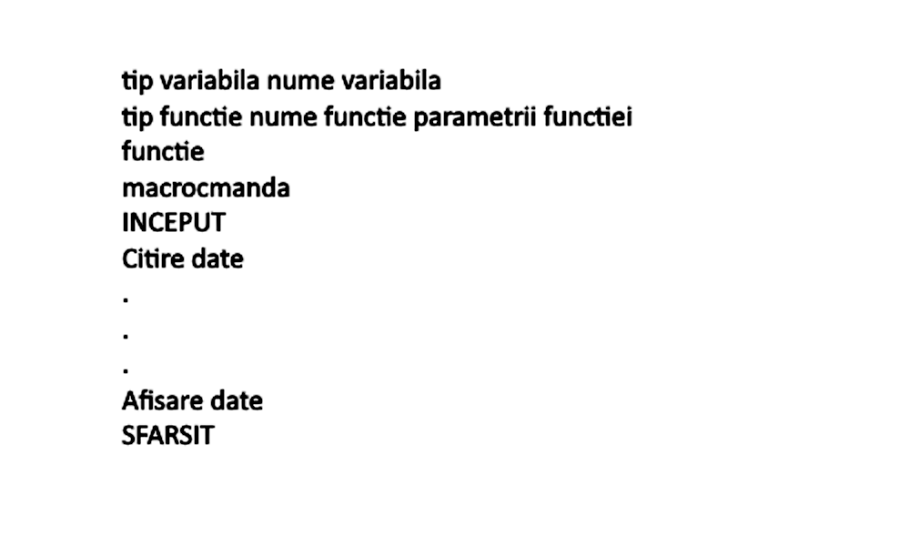

Tutorial algoritmică
Un algoritm (cuvântul are ca origine numele matematicianului persan Al-Khwarizmi) înseamnă în matematică și informatică o metodă sau o procedură de calcul, alcătuită din pașii elementari necesari pentru rezolvarea unei probleme sau categorii de probleme. De obicei algoritmii se implementează în mod concret prin programarea adecvată a unui calculator, sau a mai multora. Din diverse motive există și algoritmi încă neimplementați, teoretici.
Un limbaj pseudocod este o scriere intermediară, menită să simplifice scrierea unui algoritm într-un limbaj de programare și să ajute la
realizarea clarității algoritmului, în timp scurt. Pseudocodul este folosit de majoritatea programatorilor înainte de a compune un algoritm
într-un limbaj de programare. Este compus din termeni ai limbii în care programatorul este fluent, în cazul nostru, româna. Se pot definii doua
"zone" ale unui algoritm scris în pseudocod: anume zona de declarare, unde sunt declarate variabile, funcții, macrocomenzile, etc., și zona de calcul
unde majoritatea instrucțiunilor sunt scrise. Un șablon general este următorul:

Listă algoritmi faimoși/cunoscuți(Wikipedia):